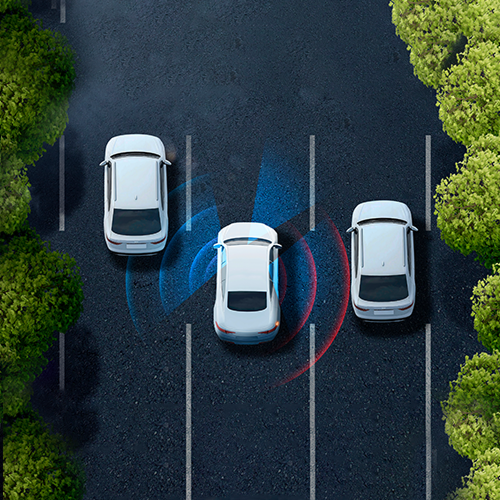
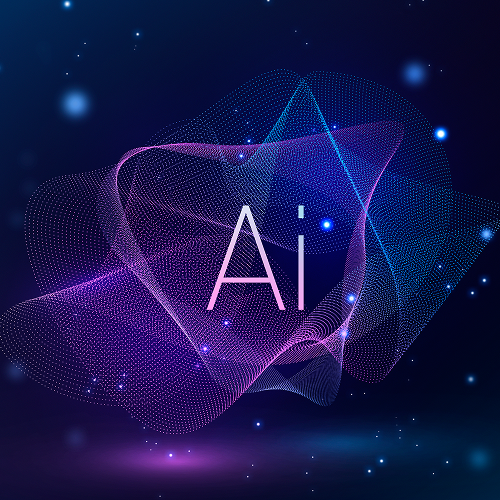
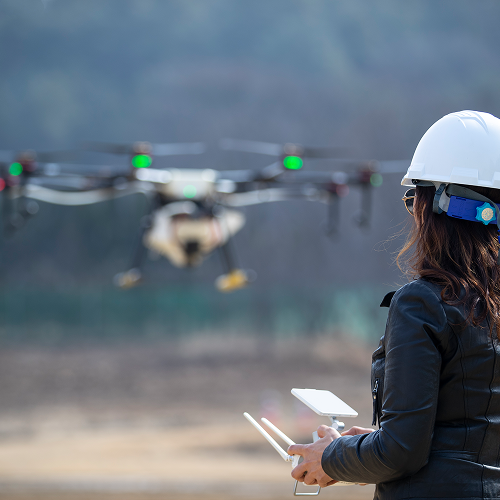
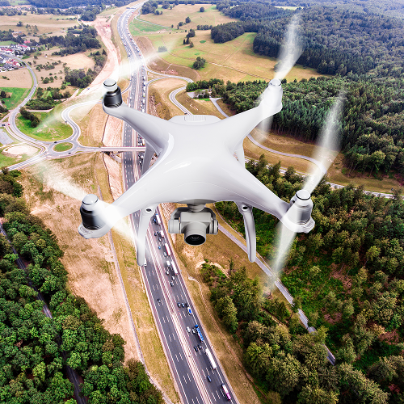

MMS
Mobile Mapping System 기반의 고정밀 공간정보 구축 기술로,
다양한 센서를 활용해 도로와 도심 환경을 3차원으로 정밀하게 취득합니다.
핵심 기술 요소

고정밀 센서 융합 기술
LiDAR·카메라·GNSS·IMU 등 서로 다른 센서 데이터를 정밀하게 결합하여 이동 중에도 안정적이고 높은 정확도의 위치·자세 정보를 확보합니다.
정밀 센서 캘리브레이션
각 센서의 좌표계를 일치시키는 캘리브레이션 기술을 적용하여 데이터 오차를 최소화하고, 후처리 및 분석 과정에서의 정확도를 높입니다.
대용량 3D 데이터 처리 기술
수십억 포인트 규모의 포인트클라우드 데이터를 빠르게 정제·자동 분류하며, 노이즈 제거, 객체 추출, 표면 재구성 등 다양한 후처리 작업을 수행합니다.

AI 기반 인식 및 자동화 기술
차선, 도로표지, 가드레일, 신호기 등 도로 기반 요소를 AI로 자동 인식하여 분석 효율을 극대화하고, 시설물 관리 시스템과 연계할 수 있는 데이터 형태로 변환합니다.
드론(Drone)
4차 산업혁명 시대에는 산업·기술 간 융합과 핵심 원천기술의 확보가 필수적입니다.
드론은 고성능 카메라와 정밀 센서를 탑재하여 지형·지물 정보를 효율적으로 취득할 수 있으며,
지상에서 접근이 어려운 지역도 안전하게 촬영이 가능합니다.
획득된 영상을 기반으로 정사영상 및 3차원 공간정보를 구축하여
정밀지도 제작, 시설물 관리, 도시·산림 모니터링 등 다양한 분야에 활용할 수 있습니다.
핵심 기술 요소
고해상도 항공영상 취득 기술
드론에 장착된 고성능 카메라를 활용하여 지형·지물 정보를 고해상도로 촬영하며,
넓은 지역을 신속하게 커버하여 공간정보 구축을 위한 정확한 원천 데이터를 확보합니다.

RTK 기반 정밀 비행·측위 기술
RTK·PPK 기반 GNSS 기술로 비행 중 드론의 위치·고도를 정밀하게 산출하여
정사영상 및 3차원 모델 생성에 필요한 정확한 위치·자세 정보를 제공합니다.
정사영상 및 3D 모델 생성 기술
촬영된 항공영상을 매칭·정합하여 왜곡을 보정한 정사영상과
실제 지형을 반영한 3차원 모델을 자동 생성하여 다양한 공간분석 업무에 활용합니다.

AI 기반 항공영상 객체 인식 기술
항공영상을 기반으로 도로, 건물, 산림, 시설물 등을 AI로 자동 식별·분류하여
대규모 지역 분석의 효율을 높이고 도시·산림 모니터링, 변화탐지 등 다양한 업무에 활용합니다.